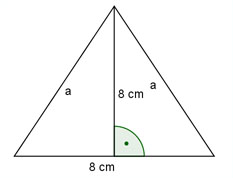

Aufgabe 49 In einem gleichschenkligen Dreieck ist die Höhe so groß wie die Basis und beträgt 8 cm. Wie groß ist seine Fläche und ein Schenkel?  Satz von Pythagoras: 8 a2 = 82 + (---)2 2 a2 = 64 + 16 = 80 a = √80 = 8,9 cm 8 cm * 8 cm A = --------------- = 32 cm2 2